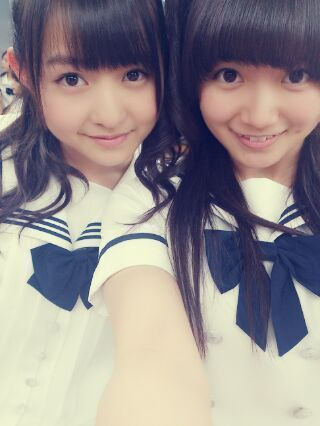
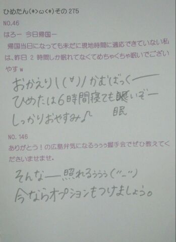
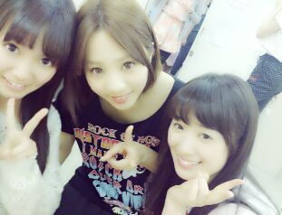
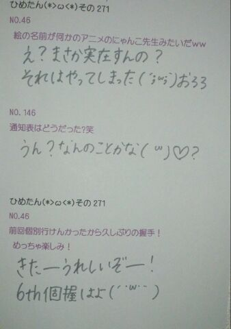
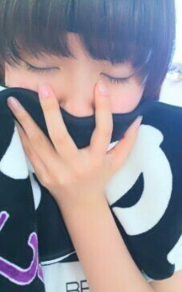
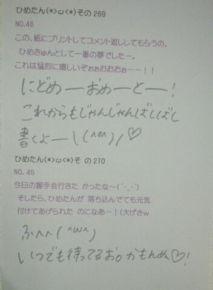
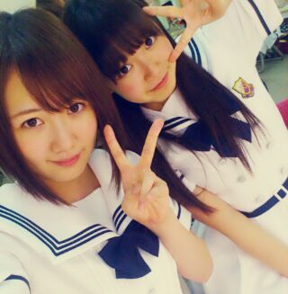

ご無沙汰ですみなさーん(´・ω・｀)
ごめんね。枯れないでみんなーあああ
今日から寝る前20分
英語の絵本読むの習慣にする！
3日後に忘れないよう宣言しとく！
それで今日はみなさんよりひと足先に
語彙・読解力検定 受けてきましたー
もう自信はすっかりございません\( ω )/☆
みんな頑張れ！ははは
でも楽しかったよー
もうちょっと本読もうかなって思ったよ。
みんなだいすき なかいさーん♪

なかいさんってチーム名、
その場のノリでつけました感が半端なくて
本当にこれでよかったんかなって話を
今日したのー
うーんでも
じゃあ何がいいって言われたら
なにも浮かばんね(*^ω^*)まーりっかー
最近めちゃめちゃ言われるのが
「髪伸びたね」って。
うー確かに、
オーディションの時なんかに比べたら
結構長いかもなうなうだけれども
なんていうか、ここだけの話、
年に２回くらい ちゃんと５センチくらい
切ってるんだけどなー...
ここだけの話にすることでもないね(白目)
は、はははっ☆
そんな感じでー質問かえしますー

 友達と好きな人がかぶったら、
友達と好きな人がかぶったら、
ひめたんならどうする？それはつらいねー( >< )
そのときになってみないとわからんけど
できるだーけ平和に行きたいですねー
ひめたんのちょっと変わったフェチなんか
あれば教えてー！何でしょう。かわったフェチーだとー( д )
多分フェチではないけど、
てか絶対フェチちゃうけども
なんだろうね、あ、今いっこ浮かんだけど
公表すんのやめます恥ずかしいからーきゃひ
ひめたんもそうとうあせっかきなほう？汗っかき！
代謝がいいわけではきっとないけど(´・ω・｀)
何かにチョイ足して作る
食べ物ｏｒ飲み物って他にもある？あったら、レシピも教えて〜。たこやきのタコのかわりに
ウインナー入れたらいいよーとか
そーゆーやつしか思い付かんわ大丈夫かな
しお しょうゆ みそ
共通する3つのワードは、なんでしょ？へ、調味料？ラーメン？
あといっこなーにーーー大豆ーちゃうかー
一つ習得できるとしたら、
中元さんはどの超能力を選びますか。
A）サイコキネシス（念力）
B）テレパシー（念話）
C）クレアボヤンス（透視）
D）プレコグニション（予知）テレポートがいいです。あ、ないねー
じゃあそうだなーサイコキネシスがいいな！
えサイコキネシスってなに？念力...だと...？
ひめたんは錠剤を...
・水と一緒に飲む派
それとも
・飲んでから水で流し込む派水と一緒に飲む派。
錠剤好きくなーい( ω )
ひめたんはいつでもどこでも寝れますか？そうですね。わりかし最近は
どこでも寝れるようになってまいりましたよ
最近の睡眠時間はどれくらい？朝に強い方？弱い方？３時間の日も６時間の日もあるけど、きっと、
みんなのひめたんは21時には寝るだろうから
じゃあ９時間ってことにしとこかな。はは
朝は強い！めざましよりはよ起きます！
遠征先でひめたとホテル一緒だったら
まず寝坊はさせません(｀・ω・´)
ひめちゃんはネイルとか興味ありますか？あと今ネイルしてますか？興味あるー♪
学校の子はみんなかわいくしてるのー
うちにはジェルネイルできる
赤外線のもあるんだけどねー
でもやってないのー
そんなかんじでねー
眠いけどまだ寝れない！

(＊´・ω・＊)
前回のブログはなんだか途中
力尽きてた(´・ω・｀)ごめなさいーなにゆえー
前回のクイズの答えは 102曲！
履歴全部写めったー感動したー
ここには貼らんけどー書かんけどー
でもね楽しかったですよ( ^ω^ )
また行こうねー♪
姉さんと３人で行きたいでーすー
履歴は貼らんけど。そうですねー
恵比中さんの「仮契約のシンデレラ」なんか
ひとりで歌ったからねー///
ベスト・オブ・楽しかった曲(*^ω^*)
はいーそんな感じでねっえー
コメント読んでると
「ひめたんの新衣装みたい！」ってお声
いっぱいありがとー\( ω )/歓喜ー
なんでひめたんは
写め撮ってないのほんとに。けへー
もうねーけへーとか言ってる場合ちゃうねん
なんで写め撮ってないの
自分なんでよねえー
新衣装すきー♪

ひめたさん＆じょーさん＆ずーさん
 ひめたんのお勧め散歩ソングは、何ですか？
ひめたんのお勧め散歩ソングは、何ですか？なんでしょうー
乃木坂の曲をシャッフルでもして聴くと
全部で25曲あるからね飽きないね。
個人的に「涙がまだ悲しみだった頃」の
オケ好きよ(〃ω〃)歌入りももちろんだけどー
広島弁の「わや」って
どんなときに使いますか？"カオスッッッ"
って感じの時ですかね☆
メンバーがドラマで
広島弁を使ってたようだけど、
ひめたんに教えてもらいに来た？
メンバーにヒロシマの方言指導とか
しなかったの？いやいやー
先生から習ったゆーてましたよー＊
みんな頑張ってましたね\( ω )/
ひめたんは普段メンバーと話すとき
広島弁出たりするのー？あと家族といるときは
バリバリの広島弁？(*^^*)えっとね、標準語も混ざりつつ
最近は関西弁にもハマりつつ、ごっちゃやね。
まさに"わやー"。
ひめたんは大和ミュージアム
いったことありますか？あるよー！
おっきい船の模型があったの覚えてるよー
戦艦カレーみたいなのがあった気がするよー
ひめたんビームのコツ教えて〜?瞳をギラギラさせてみましょう(<・ω・>)
ちょっといろいろあってびしょびしょ@新曲MV

台風くるぞ！
(＊´・ω・＊)
この前撮影してきましたー♪
９パターン衣装を着ました！
着せ替えお人形さんなったみたいで
とってーも楽しかった( ^ω^ )
新曲の衣装がまあー可愛らしいのねー
MVも可愛らしいしね
ちなみにひめたはチーム松村の
某美少女戦士某プリキュアちっくの
ピンクふりふりるーん
もうねーやばたんですかわゆす(*´ω`*)
あの衣装を着るためにあたしは、
あたしは、今日から、走ります！
最近はね自分的には結構頑張ってる
いいねー夏だね。
いわゆるホームページのプロフィール写真も
撮ってきたからねお楽しみにね☆
いわゆるアー写。
えーそして
最近は遠足で川遊びしてきた！
いいねー夏だね。
さらに最近
妹もひめたもオフだったので
ふたりでカラオケ行った( ^ω^ )
７時間ちょい！
ノンストップだたーねほんとにー
久々にがっつし歌いましたんっ
ジャンルはまあーいろいろです＊
こんな居座ったことないなー
さて何曲歌ったでしょう( ^ω^ )♪

 ひめたんの最近気になっているものは？
ひめたんの最近気になっているものは？ヨーグルトのちから。
すぅちゃんが卒業したけど、
卒業式には行ったのかな？卒業式の日は個握でした！
乃木坂2013年のカレンダーで
日芽香ちゃんが着てる洋服（スカート？）
すず香ちゃんも写真集で似たの着てたけど、
お揃いなのかな？(^_^)/あたしのを勝手に着ていった感じですー
ひめたんの歌声大好き(*^^*)
そこで「13金」の歌ってるパートを
教えて欲しいです！
あと今さらだけど「涙がまだ悲しみだった頃」
「春メロ」の歌割も知りたい！ありがとー♪
13日の金曜日
・1番Bメロ後半の前半
・2番Aメロ後半
・allサビ
涙がまだ悲しみだった頃
・1番Bメロ後半の後半
・2番Bメロ前半
・all サビ
春のメロディー
・1番Bメロ前半
・2番Aメロ前半
・all サビ
...伝わるかな？
わからんかったら聞きにきて( ^ω^ )笑
すぅちゃんにコレなら勝てる!!とか、
コレは敵わないなって思うことありますかぁ？とりあ歌は敵わない。
普段は姉妹ですーて感じだけど
ひとりのシンガーとして尊敬しておりますよー
勝るもの。何でしょうね
妹にびーむはできないかと。ええ
三姉妹の真ん中で、"めっちゃ損やー!!"って
エピソードがあれば教えて!?基本的に真ん中は損よー
話し出せば止まらないけどきっと、
まあひとつ言うなら
どっちつかずのポジション。笑
一般生活でガチで道端でひめたんと遭遇しました。
どんな風に、どんなことを声かけられたいですか？
それとも気づかぬふりの方が良いかしら？まかせますがー、
え、どんな格好してたかな？へへ
あんましプライベートすぎる空気なら
ちょっと察していただけたら嬉しいかな。

推しタオルとわったっし♪

(＊´・ω・＊)
プリンシパル大阪公演３日目！
最・終・日！
昨日の反省からいくと
お昼は美咲子役に立候補、
女中１にキャスティングしていただきましたー
投票してくださったみなさん
本当にありがとうございました
うーんだめだったかー
女中はね結構すきですーふへへ♪
夜、千秋楽は
大好きな北嶋役に立候補しました
結果はだめでした(´;ω;｀)
千秋楽だめでしたって書くのは
ちょっと悔しいけど
北嶋に立候補することに価値がある多分＊
最後のお題は無茶ぶりでなく
エチュードっていう即興小芝居。
立候補者みんなで協力して
ひとつのストーリーを作るのが
本当に楽しかったー
そして最後のサプライズ
乃木坂46 真夏の全国ツアー開催決定！
詳細はホームページ。
よろしくね☆
て言ってもみんな見るか心配だから書くね☆
8月19日（月）札幌 Zepp Sapporo
8月23日（金）福岡 Zepp Fukuoka
8月27日（火）大阪 Zepp Namba
8月28日（水）名古屋Zepp Nagoya
8月30日（金）東京 Zepp Tokyo
告知ぶっこんでみました(〃ω〃)ぺろ
５会場１０公演ですよみなさーんー♪
もう夢みたいですーらいぶすきー
そんな感じで無事
千秋楽迎えたわけなんですけれどもねっ
終わったーああああああっ\( ω )/
えーいろんな方にお世話になりましたね
この舞台に携わってくださった
すべてのみなさんに感謝！
このプリンシパル公演期間は
ひとりひとり素敵なバックストーリーが
多分あるんじゃないかと思うけども
ひめたはあれですね
えーまじで公演やんのーわーまじかー
ってちょっとした葛藤に始まり
学校行ってレッスン行っての毎日が
ちょっと慣れるまでは辛いなーとか
テストとかぶってるやんけーとか
二期生のみなさん始めましても
この期間中だったっけな。
無茶ぶりに涙した東京ラストも
懐かしい( ^ω^ )ははっ
選ばれるかなーとか
選ばれたら役ちゃんとこなせるかなーとか
一幕のオーディション上手くいくかなとか
常にプレッシャーとの戦いでした。
今回の公演のコンセプトは
２幕、迷宮の花園のキャスティングには
"16の28乗の組み合わせが存在する"
というもの。
それぞれがある役を率先して覚えて
それをみんなに伝える、
その作業の繰り返しで成立するんです
だから、個人戦でありながら
お互いに協力しあってかないと
成り立たない。
こうやって最後までやりきるには
メンバー同士の連携が要だったんですねー
なかなか辛かったけど、
みんなとだから乗り越えてきました
メンバー全員に本当に感謝ですっ
ずっと一緒にいたから
もっとみんなのこと好きになったよ！
乃木坂すきすきー∩^ω^∩
そして
私たちのために
素敵な舞台を用意してくださった
スタッフのみなさんありがとうございました
いつも私たちが気持ちよく演技できるように
最善を尽くしてくださったり
舞台のこといろいろ教えていただいたり
お世話になりました(*^^*)
そして
最後まで見守って
応援しつづけてくださった
乃木坂ふぁみりーのみなさんありがとう！
投票だなんてまた
ずいぶん心苦しいことを
させてしまったなーってあたしは誰だろうー
みなさんの声援があったから
メンバーさんも最後まで
頑張ってきましたんだと思います！
最後になりますが
脚本を書いてくださった喜安浩平さん
ありがとうございました
「迷宮の花園」
深読みするたびに
キャラクターたちの抱えてる環境とか、
いろんな細かい背景がみえてきて
演じていて
とてもわくわくしました( ω )
演出を手掛けてくださった江本純子さん
ありがとうございました
江本さんの愛のある演出、
舞台にかける熱い思い、刺激になりました！
演技の経験がほとんどない私たちに
何から何まで教えていただきました
東京公演のあと落ち込んでいた私に
励ましのお言葉をかけていただいて
よし、大阪も頑張ろうって思いました( ω )
至らない点が多くて
たくさんご迷惑かけてしまいました
本当にお世話になりました！
そんな感じですかねー
本当はひとりひとりのお名前を
羅列していきたいんだけどもね。
そして、いくちゃん
２泊３日お泊まり楽しかったよー
ゆったんシャキイズム楽しかったよー♪

６thもよろしくお願いします＊
(＊´・ω・＊)